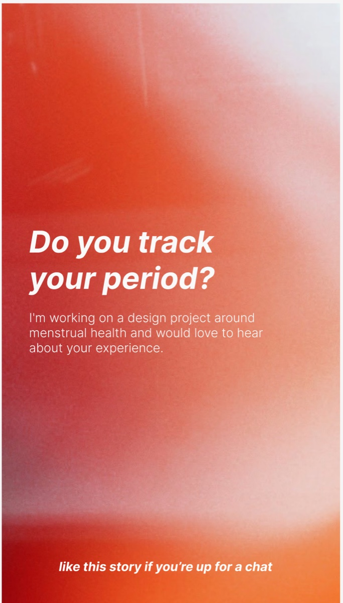
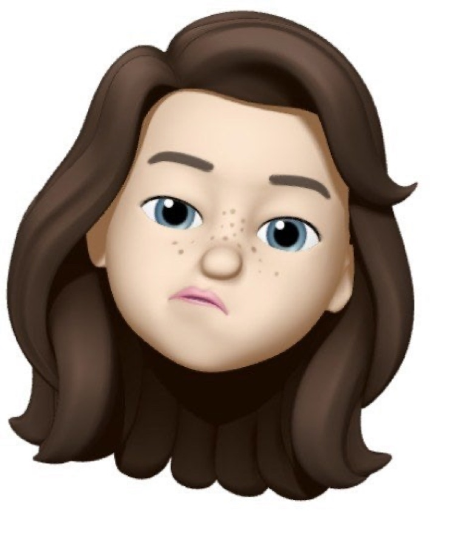
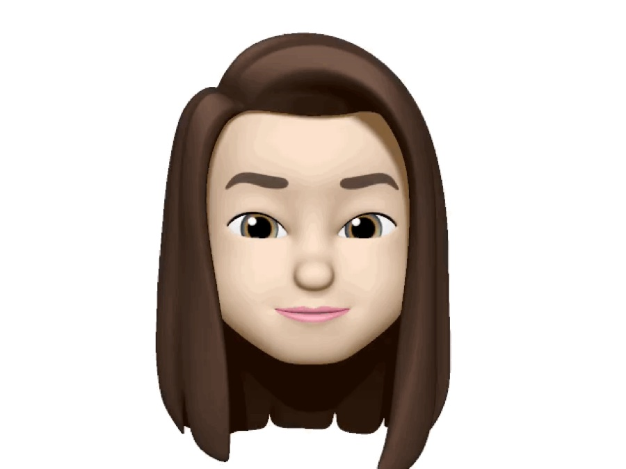

03 · Talking to Real People
Reviewing an existing product only tells part of the story. Alongside it, I reached out directly to people who track their own cycles, posting a short callout on social media and following up with anyone willing to have a conversation about their experience.
Primary research

Posting somewhere people already talk openly turned out to matter: it reached people willing to share honestly about something that's often private, rather than filtering for whoever happened to see a formal recruitment form.

